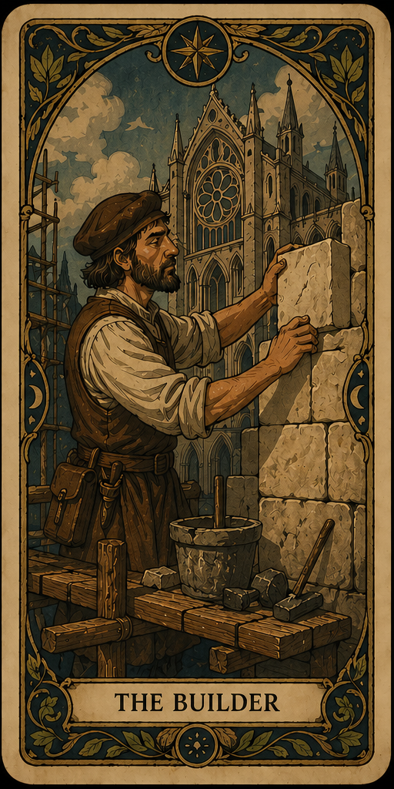
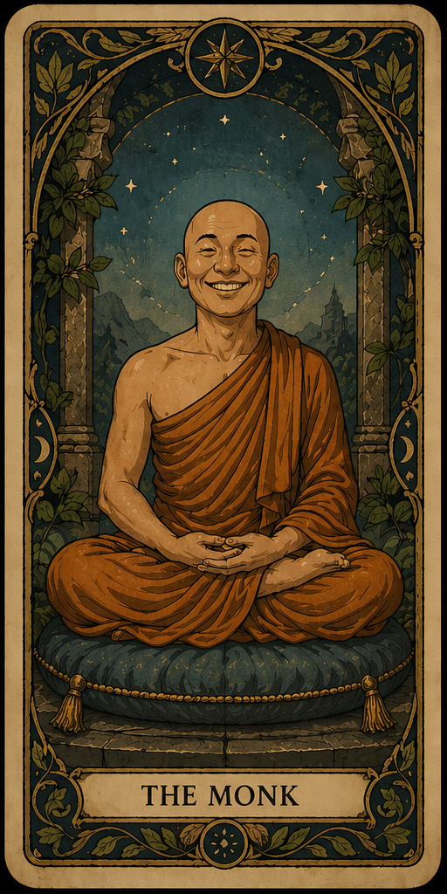
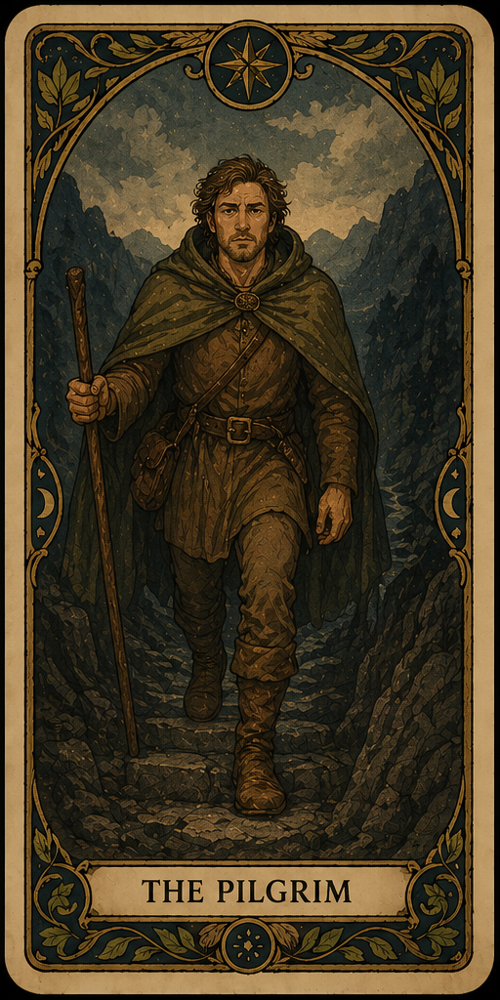

Overview
A friend once told me that there are two ways to
succeed in life: be smart, or be persistent. Most of the
things I’m proud of in my life came from persistence. I
tend to build routines around the things that matter
most to me—work, meditation, exercise, friendships,
relationships—and trust that the small daily effort adds
up over time.
Upsides
In romantic relationships, this shows up as me
being steady and dependable. I remember things, follow
through, pay attention to patterns, and keep putting
energy into the relationship even after the initial
excitement settles down.
Tradeoffs
I genuinely enjoy structure and consistency in my
daily life. I like exercising regularly, meditating every
day, eating reasonably well, and having routines that help
me feel grounded. People who prefer a much more
spontaneous or chaotic lifestyle might find me a little
rigid.

Overview
I meditate for at least an hour every day, and
Buddhism has shaped a lot of how I move through the
world. I’m less interested in Buddhism as a set of
metaphysical beliefs and more interested in it as a daily
practice of attention, kindness, and not taking myself too
seriously. One of the biggest things it’s given me is the
ability to stay present with people and respond
thoughtfully instead of reactively.
Upsides
I get along well with most people and
genuinely enjoy talking to them. I’m equally comfortable
with silly banter and deep emotional conversations, and I
think people tend to feel pretty seen and accepted around
me.
Tradeoffs
I care a lot about maintaining connection
with people, and the downside is that I can sometimes
hesitate to express my own needs if I think it might
create conflict. This is something I’ve worked on a lot
over the years, and I’m continuing to get better at
it.

Overview
I care a lot about looking at myself honestly. For
me, that’s looked like therapy, journaling, and building
close friendships with men who genuinely encourage each
other to grow. I’ve found that most meaningful growth
tends to come from being willing to face uncomfortable
emotions and have difficult conversations instead of
avoiding them.
Upsides
I think this work has made me more
self-aware, emotionally honest, and willing to engage
directly with difficult things instead of avoiding them. I
also put a lot of effort into maintaining close
relationships with people who genuinely want the best for
each other.
Tradeoffs
I tend to feel closest to people who are
comfortable talking openly about emotions, patterns, and
inner life. When that shared language isn’t there, I can
sometimes feel a little disconnected. I’m also aware that
parts of this world can sound a bit “woo-woo” from the
outside.